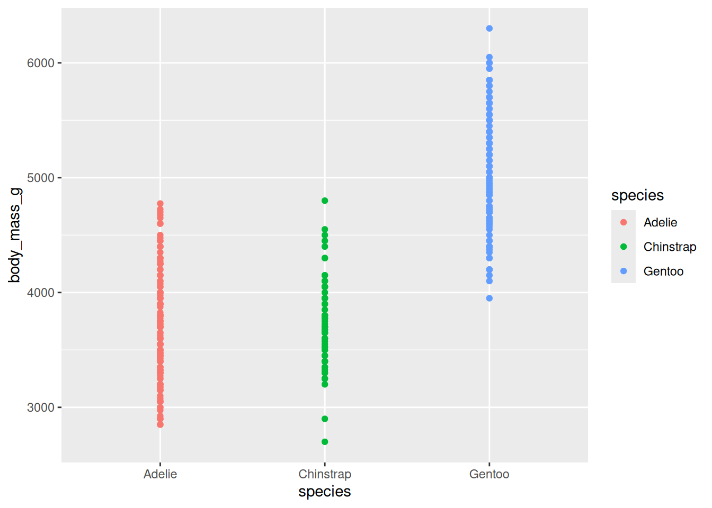
Data representation
Communicating with data
Why being thoughtful about how to present data is important in understanding and communicating information.
Communicating with data
What this session is about
Importance of story telling: Why being thoughtful about how to present data is important in understanding and communicating information.
Principles of data communication: Key ideas for making clear, accurate, and engaging plots and figures.
ggplot2 in action: Using R’s ggplot2 with the
palmerpenguinsdataset to create example plots (bar charts, histograms, boxplots, scatter plots).
This session is about communicating with data through data visualisation. We’ll talk about the importance of story telling through data, the principles of communicating data, and see some examples of making publication-ready plots using ggplot2 from the tidyverse.
Why visualize data?
Intuition and insight: Charts can reveal patterns, trends, and outliers at a glance that might be hidden in raw tables of numbers. A well-chosen plot can make relationships obvious and intuitive.
Tell a story: Visualizations help you communicate your findings. Rather than quoting statistics, a chart can convey the essence of your data (e.g. a trend or comparison) in an engaging way.
Explore and verify: Creating plots is also part of data exploration. It allows you to spot errors or anomalies and to check assumptions (e.g. whether data is skewed, or if groups differ significantly).
Engage your audience: Humans are highly visual. A clear graphic will often be remembered longer than a spreadsheet of figures, especially for audiences like stakeholders or peers less familiar with the raw data.
We visualise data because pictures help us see meaning quickly.
A plot can reveal relationships or outliers that you’d never notice in a spreadsheet.
Good visuals also tell a story — they make it easier to share findings and draw others in.
Plotting your data helps you check for mistakes or patterns you didn’t expect.
And, most importantly, people remember visuals much more easily than raw numbers.
Our example dataset: The Palmer Penguins 🐧
We’ll use the Palmer Penguins dataset as a running example. This dataset contains measurements for 344 penguins from three species (Adélie, Chinstrap, Gentoo) collected by Dr. Kristen Gorman with the Palmer Station Long Term Ecological Research Program.
What’s in the data? For each penguin, we have variables like species, island (location), bill length & depth (mm), flipper length (mm), body mass (g), sex, and year. The data is in a tidy format (each row is one penguin, each column a variable).
Getting the data: The data is available in the
palmerpenguinsR package. Make sure you have it installed (install.packages("palmerpenguins")) and loaded (library(palmerpenguins)) so that thepenguinsdata frame is available for use.
We’ll return to our now familiar Palmer Penguins dataset to look at visualisations. For each penguin, we have several morphological variables recorded, as well as sex and year of capture. We can access the data using the palmerpenguins R package.
Guidelines for effective plotting
There are several guidelines to keep in mind when producing effective plots. Let’s take a look
Clarity and simplicity
When you design a plot, start with clarity. Make it easy to read and interpret: label axes (with units where relevant), include a concise legend when needed, and avoid jargon or busy wording. Choose an appropriate font size.
Strive for simplicity Avoid unnecessary ‘chart junk’ like background colours, gridlines, and false ‘3D’ effects.
Here are two different plots showing the raw penguin body mass data:
Unclear: points overlapping, background, distracting gridlines, small font, unformatted axis labels
Improved: points distinct, distractions removed, font size appropriate, human-readable axis labels
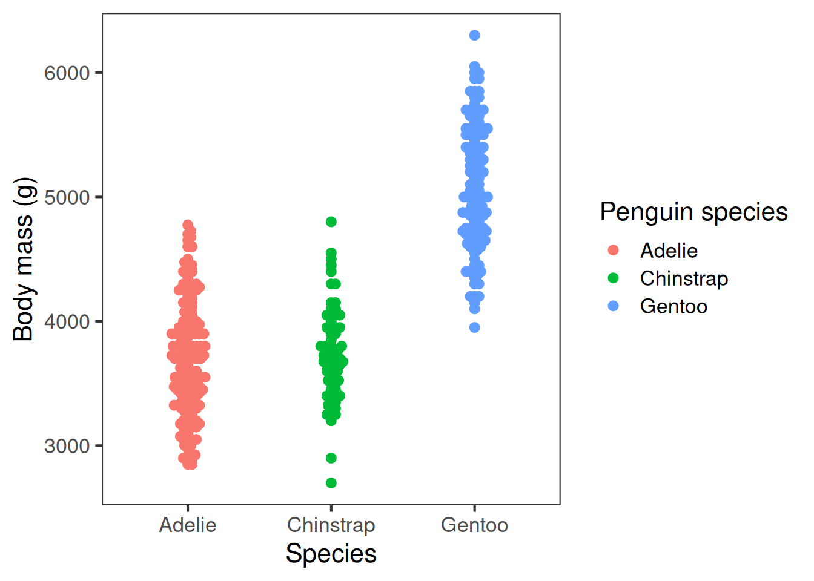
When you design a plot, start with clarity. Make it easy to read and interpret: label axes (with units where relevant), include a concise legend when needed, and avoid jargon or busy wording. Choose an appropriate font size.
Strive for simplicity Avoid unnecessary ‘chart junk’ like background colours, gridlines, and false ‘3D’ effects.
Here are two different plots showing the raw penguin body mass data:
Accuracy
Aim for accuracy. Represent values honestly with appropriate scales—start bar charts at zero, keep axis intervals consistent, and avoid distortions like squashed or stretched aspect ratios.
Excluding zero from the y-axis can produce misleading insights:
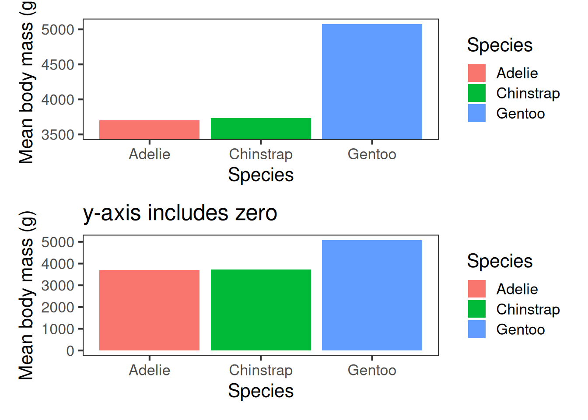

Aim for accuracy. Represent values honestly with appropriate scales—start bar charts at zero, keep axis intervals consistent, and avoid distortions like squashed or stretched aspect ratios.
Excluding zero from the y-axis can produce misleading insights. At first glance, the plot on the left, which covers the range of the data, suggests that the difference in size between Gentoos and other penguins is bigger than it actually is in reality–as the photo shows.
Choosing an appropriate plot type
Use bar charts for categorical comparisons, line plots for trends, scatter plots for relationships, boxplots, violin plots or histograms for distributions. Don’t use pie charts1.
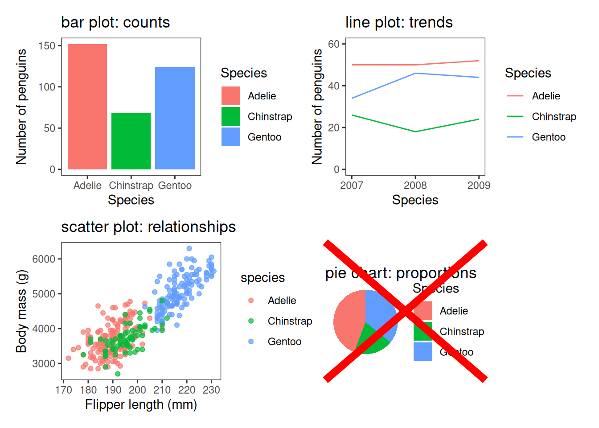
There are also a range of plot types for visualising the spread of data. These include plotting the raw data, box plots, which we’ve seen briefly in the last session, violin plots and histograms, which more accurately show the shape of the distribution of data.
Visualising the spread of data
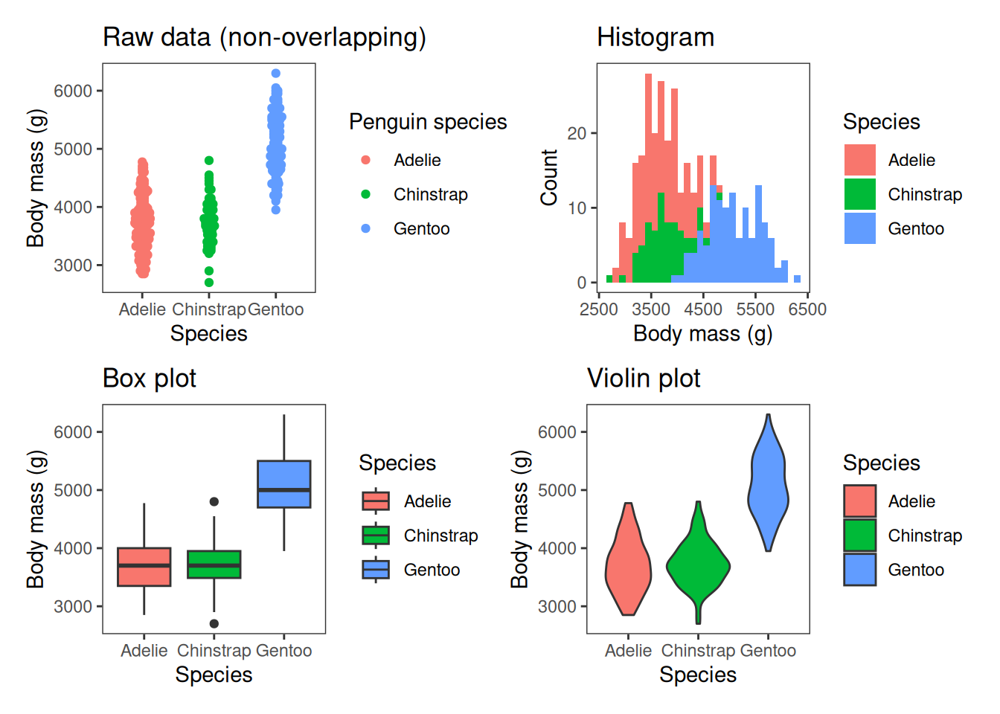
Colour, shapes, line-type
Colour palette, point shapes, and line type can all convey meaningful information, like what groups points belong to. It’s important to choose wisely. Colours should have good contrast and ideally show up even if printed in black and white. You should aim to use colourblind friendly palettes where possible, and use shapes or line types as well. But it’s important not to go overboard and make the plot too busy.
Use colour and aesthetics thoughtfully.
Colour can separate groups or highlight key points, but too many colours overwhelm.
Prefer colour-blind-friendly palettes (e.g. ggthemes, colorblindr, ggokabeito), and consider shapes or line types so the message survives without colour.
Default ggplot colours are not colour blind friendly
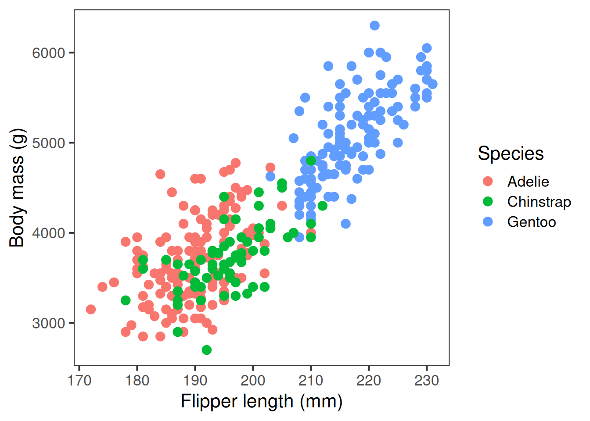
Colour-blind-friendly palette, shapes add redundancy
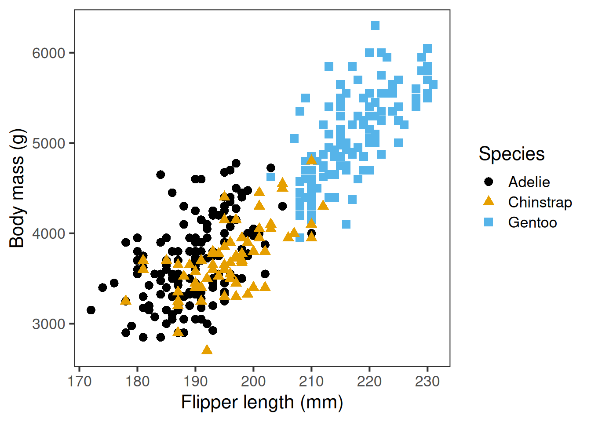
Consistency
Maintain consistency across figures: keeping the same colours and axis scales assists with clear and honest comparisons.
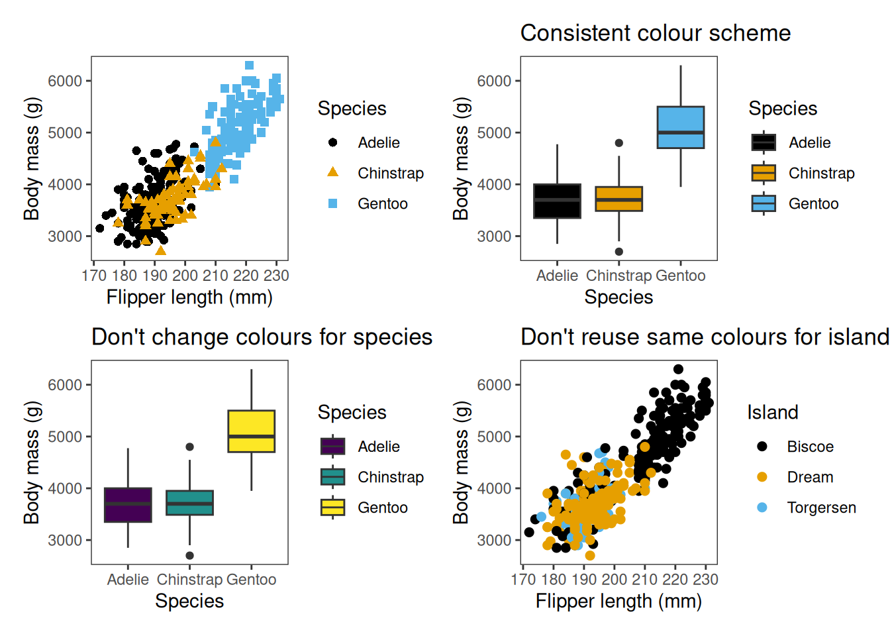
When using colour, shapes and linetypes to convey group information, it’s important to use these consistently across different plots. You shouldn’t change the colours used to represent a variable, nor use the same colours to represent different variables.
Identify the message
The most important consideration is the message—what information are you trying to convey? A figure is meant to express an idea or present results that would be too long or complex to explain only with words.
The key is to identify the message first: what do you want the audience to understand? That message should guide the design of the figure, just as it guides how you write text.
When a figure (or any representation) communicates its message clearly, it strengthens your article or presentation and helps your audience grasp the core idea quickly.
Above all else, when producing a plot, the most important consideration is the message. What information or inference are you trying to convey to the reader? A figure is meant to express an idea, and so you should have an inkling of what that idea is when you start producing the plot.
Inclusive data representation
Visualisations can be powerful, but they can exclude individuals with blindness or partial sight Some guidelines for accessibility2:
Accessible colours
Use colour-blind friendly palettes (e.g. Okabe–Ito) and/or high-contrast palettes, and never rely on colour alone — add shapes, line styles, or facets.Alt text and data verbalisation
Write clear descriptions of plots so screen readers can convey the message. TheBrailleRpackage aims to make R easier for users of screen readers.Data sonification
Turn data into sound (e.g.sonify, pitch fory-values, stereo forx-values). Helps reveal trends through listening.Data tactualisation
Convert plots into tactile graphics (e.g. embossers,tactileRpackage) so figures can be felt by touch.
Data visualisation is a powerful communication tool in science, but it’s important to recognise that the use of visualisations alone can be exclusionary to individuals with blindness or partial sight. As previously mentioned, thoughtful choice of colour is one way of improving accessibility, particularly focusing on high-contrast palettes. Alt-text and data verbalisation involve writing clear descriptions of trends. The BrailleR package aims to make ggplot output more friendly for users of screen readers.
Some less frequently used approaches that R enables are data sonification and data tactualisation. Sonification turns data into sound, representing trends through pitch. Tactualisation involves printing plots in such a way that the data can be felt by touch–increasingly possible with the advent of 3d printers.
How to plot using R and tidyverse
We’ll next have a look at how to produce these types of plots in R using the tidyverse package ggplot2.
Base R graphics
First, let’s take a quick look at the default plotting function used in base R. If you’ve used R before, you might have encountered the plot() function. R has graphics capabilities built in, but customising these for use in the biological sciences can be quite cumbersome.
R has graphics capabilities built in, but can be hard to customise. You may have used these if you’ve used R in the past:
plot(penguins$flipper_length_mm, penguins$body_mass_g,
col = penguins$species,
xlab = "Flipper length (mm)",
ylab = "Body mass (g)")
legend("topleft", legend = levels(penguins$species),
col = 1:3, pch = 1)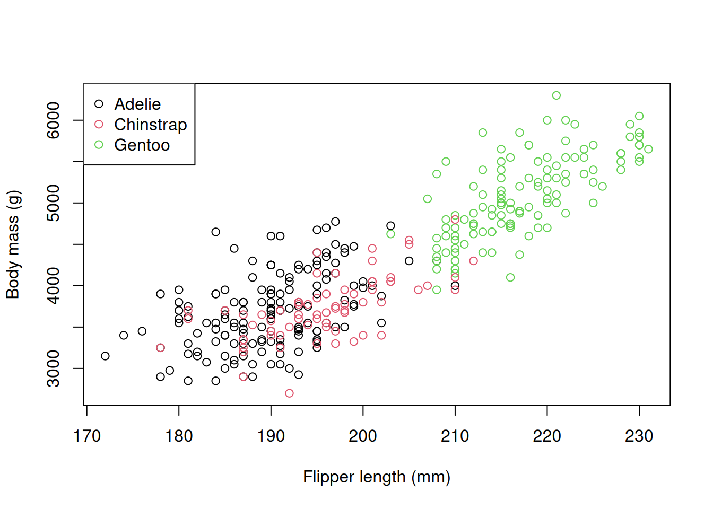
Introducing ggplot2
ggplot2 is a package written by Hadley Wickham that aims to simplify the production of plotting.One of the advantages of this approach is that you can build up plots in a step-wise, layer by layer approach using a set of consistent functions–a more flexible approach than the base plotting functions.
It’s also easy-ish to learn, and makes nice plot by default, handling things like legends and labels.
Crucially, the approach to plotting integrates well with the tidy data concept, and feeds naturally into the analyses we will do later.
ggplot23 is part of the tidyverse.
It lets you build plots by adding layers.
This is more flexible and consistent than using lots of special-case functions.
It’s easy to learn: the same small set of rules works everywhere.
It also makes nice plots by default, handling things like legends and labels automatically.
Because plots are built in layers, the process mirrors how we analyse data.
This makes it easier to go from raw data to a clear message.
Anatomy of a ggplot
ggplot uses concepts from the ‘grammar of graphics’. A ggplot has layers, each added step by step with the plus sign. This plot has:
first, the data layer, our penguins dataset second, the aesthetics layer, where we tell R which variables to use in the plot third, the geometry of the plot we want to produce, here we’re using the point geometry, fourth, optionally, other labels that control the plot’s appearance. Here, we’ve included custom axis and legend labels.
ggplot uses the grammar of graphics. A ggplot has layers, built step by step:
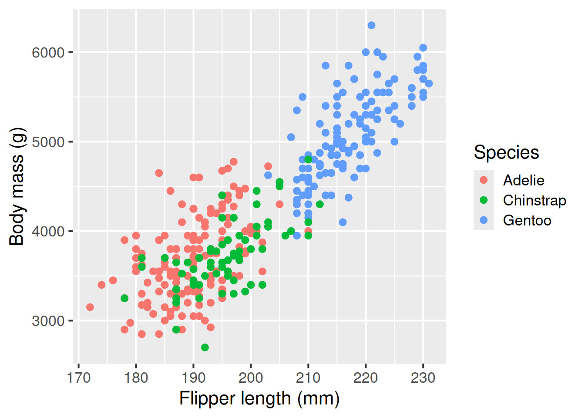
- the
datalayer: our familiar Palmerpenguinsdataset. - the aesthetics
aes():
a function that maps variables to axes or visual properties (x,y,colour) geom_x: how to display data (e.g._point,_bar,_boxplot,_line,_histogram, etc.)labs: control what appears on the axis labels, legends, etc.
Producing different plots in ggplot
Let’s have a look at how we produce some of the different plot types in ggplot
Let’s have a look at how we produce some of the different plot types in ggplot
A scatter plot is useful for showing the relationship between variables, here flipper length and body length are positively associated. We use geom_point() for scatterplots
Scatter plot: geom_point()
A scatter plot is useful for showing the relationship between two variables. Here, flipper length and body length are positively associated.
ggplot(penguins,
aes(x = flipper_length_mm,
y = body_mass_g,
colour = species)) +
geom_point() +
labs(x = "Flipper length (mm)",
y = "Body mass (g)",
colour = "Species")
Bar plots are useful for showing counts of categories. Each bar’s height represents the number of observations in a given category. We use geom_bar for barplots.
Bar plot: geom_bar()
A bar plot is ideal for showing counts of categories. Each bar’s height represents the number of observations in that category.
ggplot(data = penguins,
aes(x = species, fill = species)) +
geom_bar() +
labs(x = "Species",
y = "Number of penguins",
fill = "Species")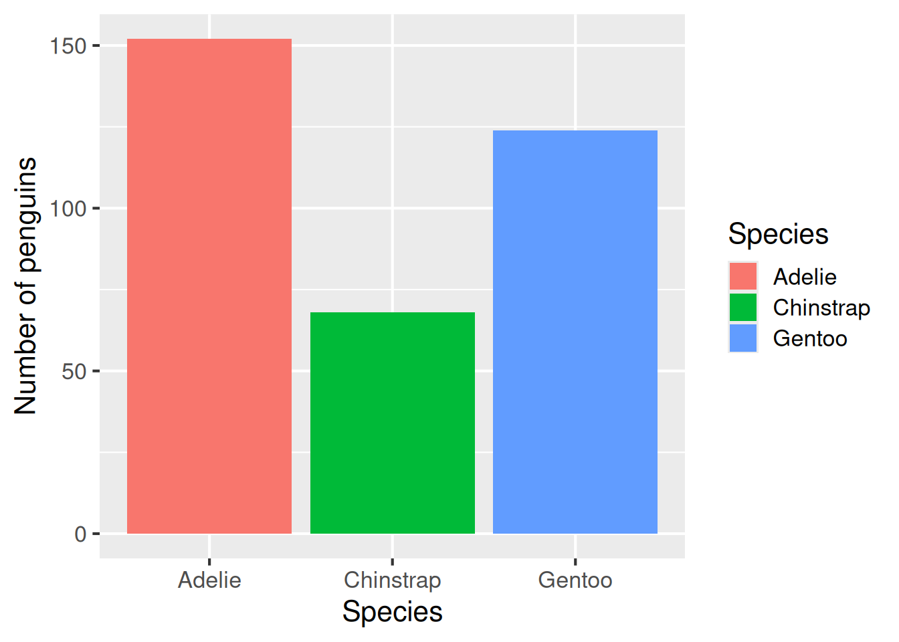
Line plots are useful for showing trends over time, or otherwise connecting points that are associated with each other across the x-axis. The geom_line geometry is used to make line plots.
Line plot: geom_line()
A line plot is useful for showing trends over time. Here, the plot shows that the number of penguins of each species is relatively constant over time.
penguins |>
count(species, year) |>
ggplot(aes(x = as.factor(year),
y = n,
colour = species)) +
geom_line() +
lims(y = c(0,60)) + # Specify new y-axis limits
labs(x = "Year",
y = "Number of penguins",
colour = "Species") 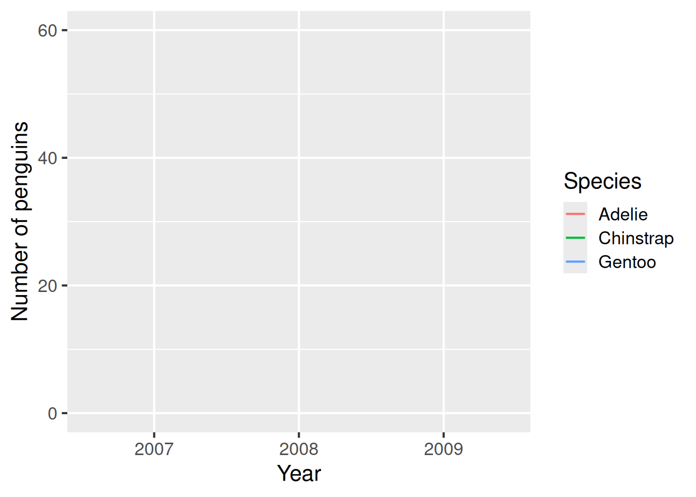
Box plots are classic ways of showing the spread of data. We can produce a boxplot using geom_boxplot. This shows the interquartile range, the median, the range of the data and any outliers as points.
Boxplot: geom_boxplot()
A box plot is a classic way of showing the spread of data, including the interquartile range (the upper and lower edges of each box), the median (thick line in the middle), the range of the data (whiskers; excluding outliers) and any outlier points.
ggplot(data = penguins,
aes(x = species,
y = body_mass_g,
fill = species)) +
geom_boxplot() +
labs(x = "Species",
y = "Body mass (g)",
fill = "Species")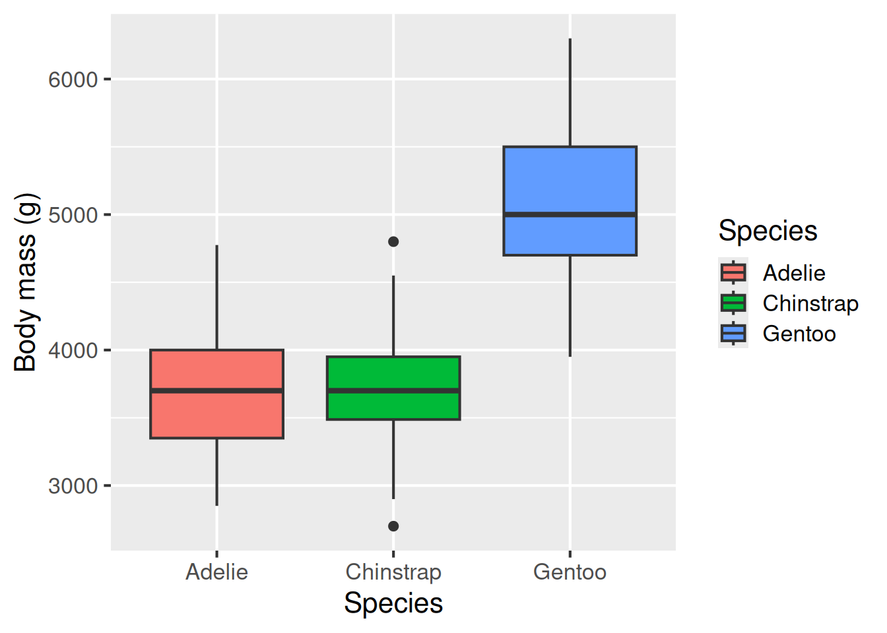
Histogram: geom_histogram()
The next two plot types are also useful for showing the spread of data, histograms and violin plots. A histogram takes a continuous response variable and places observations into bins of a certain size. The number of observations falling in each bin is then plotted on the y-axis. This gives you insight into how many observations of different sizes occurred in the dataset. geom_histogram is used for histograms.
Histograms are useful for representing the spread of data–its distribution. This plot shows that the Gentoos are the largest species on average, but there is overlap between the three species’ sizes.
ggplot(data = penguins,
aes(x = body_mass_g,
fill = species)) +
geom_histogram() +
labs(x = "Species",
y = "Body mass (g)",
fill = "Species")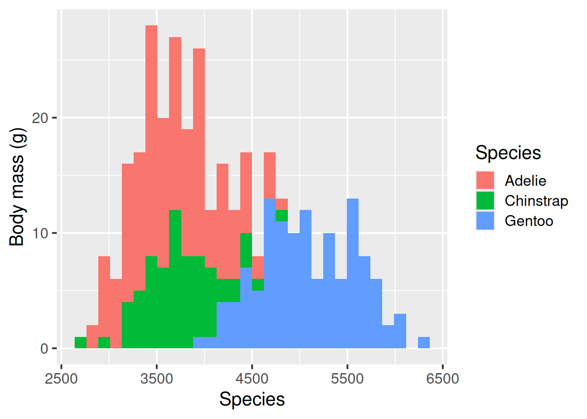
Violin plot: geom_violin()
Violin plots sit somewhere between box plots and histograms for showing the spread of data. Instead of a rectangular box, as in a box plot, the violin plot shows the distribution of data, almost like a histogram turned on its side, and reflected. geom_violin() is used to make violin plots.
A violin plot is sort of like a combination of a box plot and a histogram turned on its side.
ggplot(data = penguins,
aes(x = species,
y = body_mass_g,
fill = species)) +
geom_violin() +
labs(x = "Species",
y = "Body mass (g)",
fill = "Species")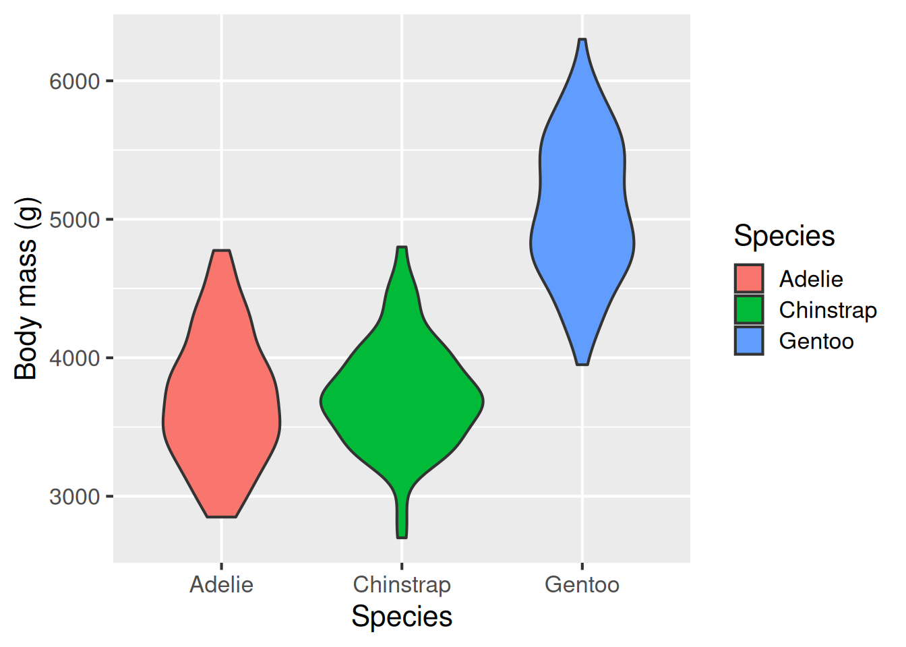
A beeswarm plot is a relatively new way of representing raw data while minimising points that sit on top of each other. This type of plot is useful when you want to convey both the spread of the data, but also the individual points themselves. To produce a beeswarm plot, we need to first install an extra R library called ggbeeswarm()–once we’ve done that, it works in the same way as other plot geometries.
Raw data beeswarm plot: geom_beeswarm():
A beeswarm plot is a relatively new way of representing raw data while minimising points that sit on top of each other.
library(ggbeeswarm) # need to use a new library
ggplot(data = penguins,
aes(x = species,
y = body_mass_g,
colour = species)) +
geom_beeswarm() +
labs(
x = "Species",
y = "Body mass (g)",
colour = "Penguin species")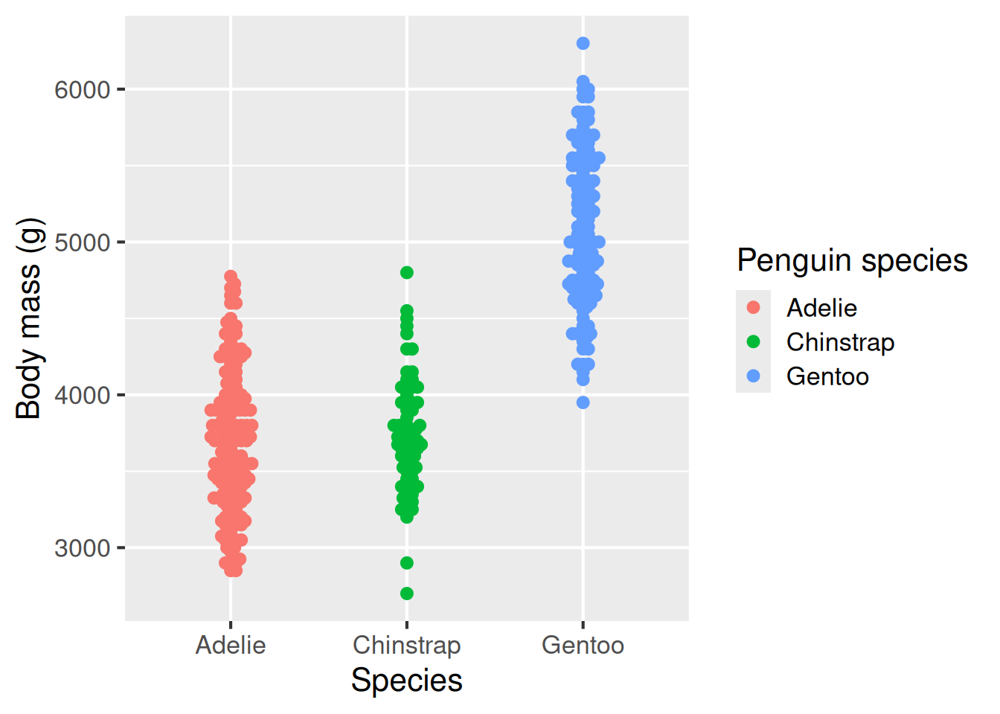
Customising plot appearance
ggplot defaults don’t meet some of our effective plotting guidelines, mostly through “chart junk” and colour schemes. But we can easily change these. Let’s have a look at how
first we have our original plot
next we modify that original plot by changing the colour scale to a colourblind friendly palette we remove the distracting grey background using theme_bw, while also increasing the base font size for easier reading and finally, we add an extra customisation to remove the distracting gridlines.
ggplot defaults don’t meet some of our effective plotting guidelines, mostly through “chart junk” and colour schemes. But we can easily change these
flippers_vs_mass # Original plot
library(ggthemes) # For colourblind palette
flippers_vs_mass <-flippers_vs_mass +
scale_color_colorblind() + # Add colour-blind friendly colour scale
theme_bw(base_size = 16) + # Change plot theme and font size
theme(panel.grid = element_blank()) # Turn off the grid
flippers_vs_mass
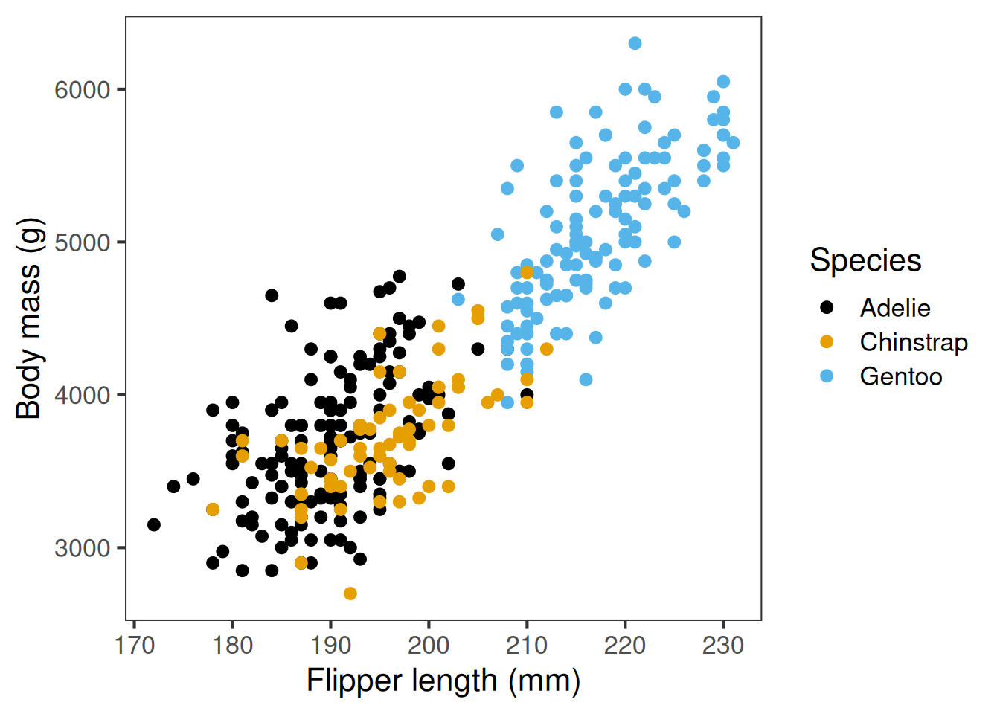
Comparing groups with facets
A final note on another handy ggplot feature. Sometimes we want to show the same relationship across different subsets of the data, for instance, the link between flipper length and body mass across different islands.
We can use plot facets, via facet_grid or facet_wrap, to produce small multiples of the same plot:
Sometimes we want to show the same relationship across different subsets of the data —
for example, how the link between flipper length and body mass varies by island.
We can use facets to create small multiples of the same plot.
flippers_vs_mass +
facet_grid(cols = vars(island))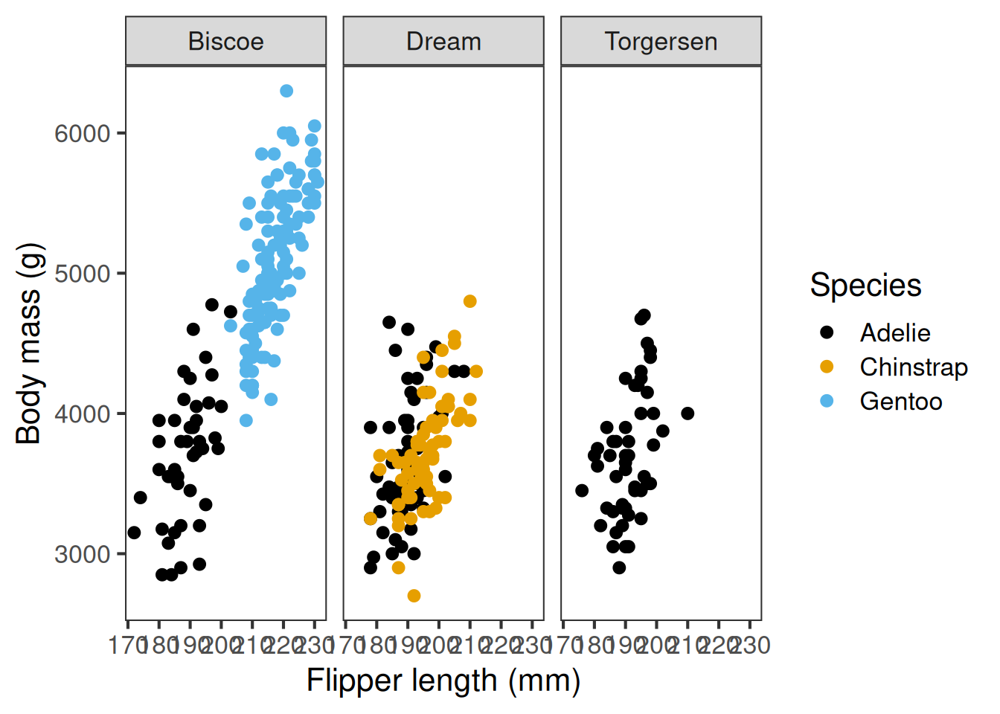
Recap & next steps
In this session, we learned that thoughtful data representation helps us understand and communicate biological patterns. Clear, accurate and consistent figures make your message easier to grasp. ggplot2 from the tidyverse lets us build up plots in layers to produce publication-worthy plots. Accessible design–good colour choices, alt text and clear labelling, improves communication for everyone.
You are now ready to tackle this week’s hands-on workshop content, which will cover data handling, summarisation, and visualisation.
- Thoughtful data representation helps us understand and communicate biological patterns.
- Clear, accurate, and consistent figures make your message easier to grasp.
ggplot2lets us build plots in layers for flexibility and reproducibility.
- Accessible design — good colour choices, alt text, and clear labelling — improves communication for everyone.
You are now ready to tackle the hands-on workshop content, which will cover data handling, summarisation, and visualisation.
❓Check your understanding
- What function would you use to make a scatter plot showing the relationship between two numerical variables?
- What function would you use to make a bar plot showing counts of penguins by species?
- What function would you use to show how penguin numbers change over time?
- What function(s) would you use to show the distribution of body mass values?
- What argument or function helps make your plot more accessible to colour-blind readers?
Footnotes
Seo & Dogucu (2023) Teaching Visual Accessibility in Introductory data science classes with multi-modal data representations, J Data Sci 21(2)428-441, https://doi.org/10.6339/23-JDS1095↩︎
This session borrows heavily from the ggplot2 book https://ggplot2-book.org/statistical-summaries.html↩︎